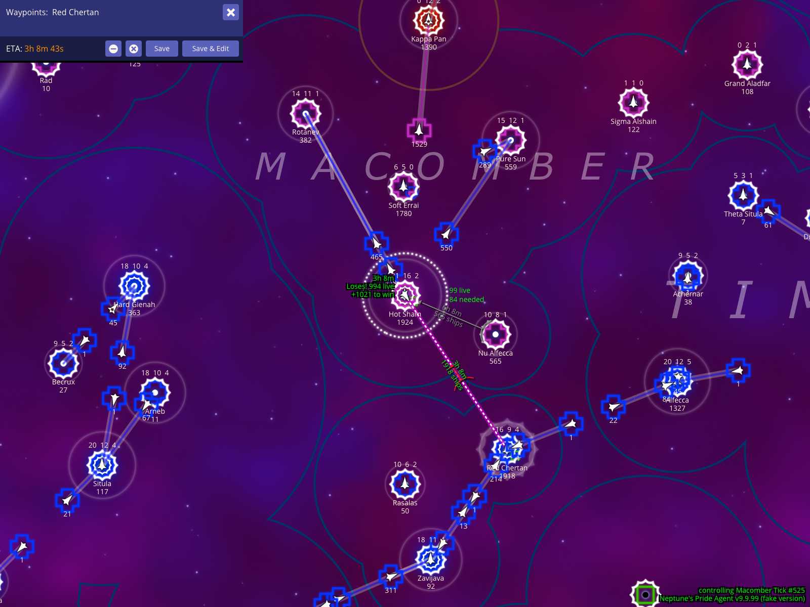
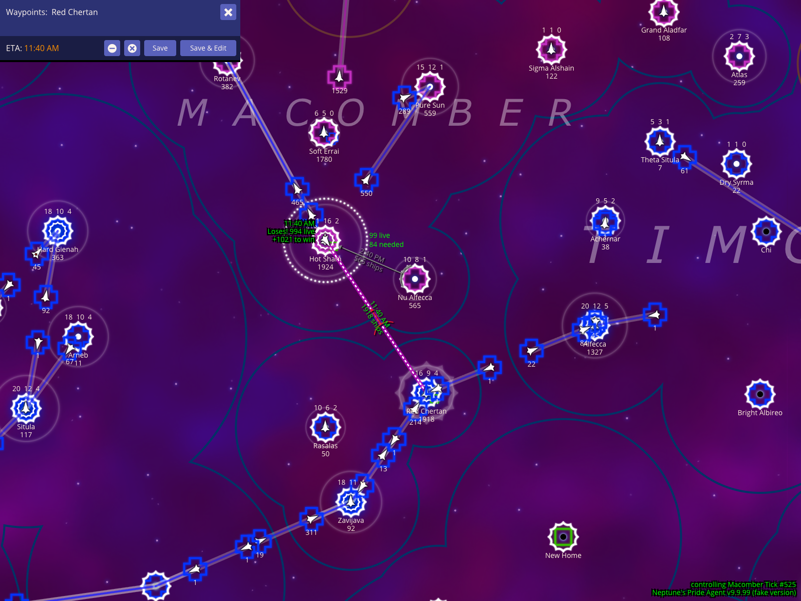
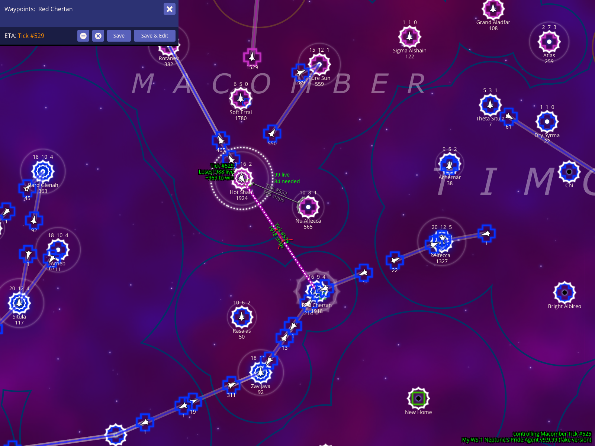

Section 001
How To Read The Battle HUD
The battle HUD is not one isolated panel. It is a set of map overlays, ETA labels, and control shortcuts that help you inspect a frontline star, plan enemy movement, and model worst-case combat assumptions.
Book section: How to read the battle HUD
Create a fake enemy fleet from the selected frontline star
Start by selecting Hot Sham, the hostile frontline star shown near the center of the map, then press x to make a fake enemy fleet. NPA temporarily switches control context to Macomber so you can plan the short route from Hot Sham to nearby Red Chertan without changing the real game state.

How to use it
- Select the enemy star you want to inspect.
- Press
xto create a fake enemy fleet from that star. - Add nearby
Red Chertanas a waypoint to see where that fleet could go and how long it would take.
What to expect
Hot Shamstays near the middle of the map with the newly created synthetic fleet selected on top of it.- The route line runs clearly from
Hot Shamtoward the visibleRed Chertanwaypoint. - The lower-right map overlay shows that you are temporarily controlling the selected enemy empire.
- The waypoint editor displays an ETA using the current timebase.
Caveats
- These orders are only for planning. They do not send any real orders to the server.
Show the battle ETA as clock time
With the Hot Sham route still centered, press % once to show the ETA as a real-world clock time. This is useful for setting an alarm in your own timezone so you can observe the outcome or add follow-on fleet orders when the route resolves.

How to use it
- With the battle route visible, press
%once. - Read the ETA line in the waypoint editor as a clock time.
What to expect
- Clock mode shows a real-world timestamp such as
11:40 AM. Hot Sham, the selected fake fleet, and theRed Chertanroute stay in the same map frame while the ETA display changes.- Use this for your own alarms, not cross-timezone coordination. Allies in other timezones should usually coordinate by tick number instead.
Show the battle ETA as relative ticks
Press % again to convert the same Hot Sham to Red Chertan route from clock time into a relative tick count. Relative ticks are best when you are comparing your selected fleet against other moving fleets you can see on the map, because tick offsets are easier to compare than the game's default relative real-time display.

How to use it
- After clock-time mode is visible, press
%one more time. - Read the ETA and production readouts as relative tick counts.
What to expect
- Relative tick mode changes the same ETA into a tick count such as
4 ticks. - The waypoint panel, production readout, selected fleet, and visible route stay aligned with the chosen timebase.
Show the same battle ETA as absolute tick numbers
Press % again when you want a precise game tick for the Hot Sham to Red Chertan route instead of a relative duration. Absolute tick numbers are the best timebase for ally coordination because everyone sees the same tick even when their local clock time differs.

How to use it
- After reaching relative tick mode, press
%one more time. - Read the ETA and production readouts as explicit tick numbers.
What to expect
- The same route now shows an exact destination tick such as
Tick #529. - Because
Hot Sham, the selected fleet, and the route remain in frame, you can compare the fleet ETA directly against combat or production timing discussed in reports and chat.
Model a worst-case fight by giving the enemy extra weapons
Use . while the Hot Sham battle route is visible to add one weapons level to the side NPA is currently treating as the enemy in the battle HUD calculation. The footer shows Enemy WS+1 so you can see that the current numbers are using an adjusted estimate rather than the regular calculation.

How to use it
- Keep the battle route selected.
- Press
.to increase the enemy weapons assumption by one level.
What to expect
- The footer overlay changes to show the enemy handicap, for example
Enemy WS+1. Hot Sham, the selected synthetic fleet, and the route towardRed Chertanremain visible while the battle HUD describes the harsher combat assumption.- Because this example is controlling Macomber,
Enemy WS+1is applied to Macomber's attacking fake fleet rather than the Red Chertan defenders. That is why the projected survivors are lower in this screenshot.
Caveats
Enemy WS+1follows the current planning perspective. When you are controlling another player, the bonus can affect either side of the fight depending on which side NPA is modeling as the enemy.- This is a planning aid. It changes NPA's local calculation, not the real weapons tech on the server.
Return to the regular weapons calculation
Press , once after Enemy WS+1 to remove the weapons adjustment and return the battle HUD to the regular calculation. This gives you a visual checkpoint for the baseline survivor estimate before trying the opposite assumption.

How to use it
- Start from the
Enemy WS+1view. - Press
,once to step the weapons adjustment back to zero.
What to expect
- The footer no longer shows an
Enemy WSadjustment. Hot Sham, the selected synthetic fleet, and the route towardRed Chertanremain visible so you can compare the regular calculation against the adjusted one.
Caveats
- This only changes NPA's local battle estimate. It does not change any real tech level or submitted fleet order.
Model the opposite weapons advantage with My WS-1
Press , again to continue past the regular calculation into My WS-1. A negative local weapons adjustment grants the other side of the battle the weapons advantage for the local projection.

How to use it
- Start from the regular weapons calculation.
- Press
,one more time to displayMy WS-1.
What to expect
- The footer overlay changes to show
My WS-1. Hot Sham, the selected synthetic fleet, and the route towardRed Chertanremain visible while the survivor estimate reflects the opposite weapons assumption.- Because this example is controlling Macomber,
My WS-1reduces Macomber's attacking fake fleet by one weapons level, effectively granting the Red Chertan defenders the advantage.
Caveats
My WS-1follows the same perspective rule asEnemy WS+1: the label is relative to the current planning perspective, not necessarily your real account in the live game.